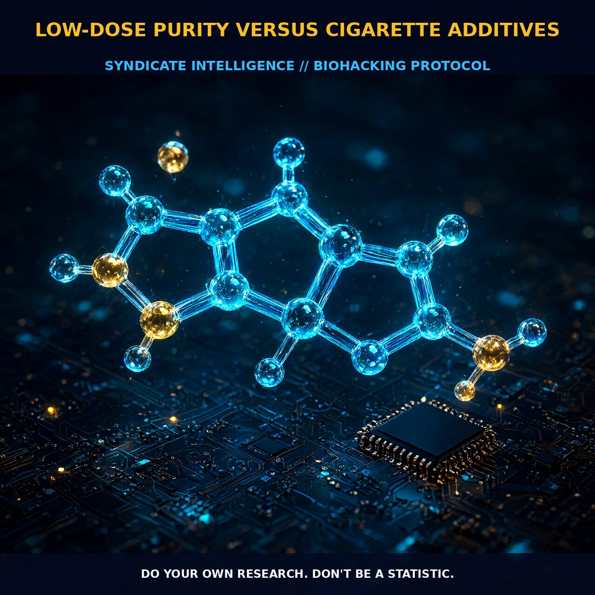

Ligand Purity and Pharmacokinetic Optimization in Low-Dose Oral

1. The Pharmacokinetic Distinction
The distinction between tobacco-free oral nicotine and cigarette smoke lies fundamentally in the pharmacokinetic profile and the purity of the ligand source. Cigarette delivery systems bombard the system with a substantial 15 to 20 milligram dose within seconds, creating a rapid spike that lights up pleasure pathways like a Christmas tree. This high-velocity delivery is efficient but introduces a barrage of exogenous chemicals including acetals, aldehydes, and heavy metals that interact directly with the lungs.
In contrast, oral formulations such as pure nicotine chews or patches release between 1 to 4 milligrams over a more prolonged window of twenty to thirty minutes. This slower release mechanism avoids the sharp euphoric rush while still maintaining effective receptor occupancy, significantly reducing the risk of nausea and the subsequent metabolic crash.
2. Biological Leverage & Mechanism
The primary mechanism of action involves the precise tuning of vigilance, memory, and motor coordination through nicotinic acetylcholine receptor signaling. At low doses, typically between 1 and 4 milligrams, nicotine enhances focused attention during mentally tiring tasks and improves fine motor control. Individuals demonstrate faster, more precise handwriting and increased finger tap speed without sacrificing accuracy, suggesting a direct improvement in neuromuscular efficiency.
However, the dose-response curve is steep and narrow; excess nicotine is toxic and can impair mitochondrial function, potentially leading to secondary effects such as hair loss or erectile dysfunction if used chronically at high levels. This toxicity profile necessitates a cautious approach where low-dose occasional use is prioritized over daily supplementation for optimal aging and cognitive performance.
3. The Purity Imperative
Addiction in tobacco products is not solely a product of nicotine itself but arises from the complex interplay between nicotine and other compounds found in tobacco smoke. When you separate these ideas in your mental model, low-dose occasional use of pure nicotine emerges as a distinct biological lever rather than a habitual crutch.
Oral administration further isolates the variable by avoiding direct lung interaction, preserving the integrity of the pulmonary microbiome which can be disrupted by inhalation. This purity allows for targeted modulation of cognitive function without the systemic load of combustion byproducts or the chemical load of e-liquid additives that may counteract brain function benefits.
4. Tactical Protocol Implementation
For practical application, select tobacco-free oral sources like pure nicotine chews or lozenges that deliver approximately 4 milligrams per unit with no sugar or artificial sweeteners. Artificial sweeteners can negate the cognitive benefits, so ensure the formulation relies on food-grade ingredients to maintain purity.
Cut standard nicotine patches in half if needed to achieve the recommended 1 to 2 milligram range for occasional use, leaving them on for one to two hours to allow steady transdermal absorption without inducing nausea. Schedule your usage around peak cognitive demand rather than treating it as a constant background supplement. Use divided doses of 1 to 2 milligrams, two to three times per day as needed, to support performance without overloading the system.
5. Prostar Life Hack
The Half-Patch Protocol: Cut standard nicotine patches in half to achieve a precise 1–2mg dose for occasional use. Apply for one to two hours during peak cognitive demand to maximize neuromuscular efficiency and alertness while avoiding the toxicity threshold associated with high-dose chronic consumption.
Prostar Life Hack
The Half-Patch Protocol: Cut standard nicotine patches in half to achieve a precise 1–2mg dose for occasional use. Apply for one to two hours during peak cognitive demand to maximize neuromuscular efficiency and alertness while avoiding the toxicity threshold associated with high-dose chronic consumption.
[ AUTHOR: LEAD TECHNICAL RESEARCHER ]
[FRESH ON CHAIN: a741487f06ff06f9... ]